Oc1cc(O)cc(O)c1Article Schemes 2-3 and experimental pp7-9; two target branches and all synthetic derivatives 7a/b-14. Mechanistic i-iii are not isolated intermediates. SI unavailable, so available-SI coverage is false. Tautomeric mixtures are represented by the source-drawn enol tautomer; no unstated absolute stereochemistry assigned. Facts compiled deterministically; independent review pending.
完整 JSON · 逐步 CSV · 路线序列 · SDF · HRMS 核对
| 事件 | 分子连接 | 报告产率 | Canonical reaction SMILES |
|---|---|---|---|
| E01 | 3 + acyl-a → 4a | 4a: 88% | CC(C)CC(=O)Cl.Oc1cc(O)cc(O)c1>>CC(C)CC(=O)c1c(O)cc(O)cc1O |
| E02 | 4a + prenyl-Br → 5a | 5a: 47% | CC(C)=CCBr.CC(C)CC(=O)c1c(O)cc(O)cc1O>>CC(C)=CCc1c(O)cc(O)c(C(=O)CC(C)C)c1O |
| E03 | 5a + prenyl-Br → 6a | 6a: 61% | CC(C)=CCBr.CC(C)=CCc1c(O)cc(O)c(C(=O)CC(C)C)c1O>>CC(C)=CCC1=C(O)C(CC=C(C)C)(CC=C(C)C)C(=O)C(C(=O)CC(C)C)=C1O |
| E04 | 6a → 1 | 1: 69% | CC(C)=CCC1=C(O)C(CC=C(C)C)(CC=C(C)C)C(=O)C(C(=O)CC(C)C)=C1O>>CC(C)=CCC1(CC=C(C)C)C(=O)C(C(=O)CC(C)C)=C(O)C2=C1OC(C)(C)C=C2 |
| E05 | 3 + acyl-b → 4b | 4b: 84% | CCC(C)C(=O)Cl.Oc1cc(O)cc(O)c1>>CCC(C)C(=O)c1c(O)cc(O)cc1O |
| E06 | 4b + prenyl-Br → 5b | 5b: 49% | CC(C)=CCBr.CCC(C)C(=O)c1c(O)cc(O)cc1O>>CCC(C)C(=O)c1c(O)cc(O)c(CC=C(C)C)c1O |
| E07 | 5b + prenyl-Br → 6b | 6b: 59% | CC(C)=CCBr.CCC(C)C(=O)c1c(O)cc(O)c(CC=C(C)C)c1O>>CCC(C)C(=O)C1=C(O)C(CC=C(C)C)=C(O)C(CC=C(C)C)(CC=C(C)C)C1=O |
| E08 | 6b → 2 | 2: 72% | CCC(C)C(=O)C1=C(O)C(CC=C(C)C)=C(O)C(CC=C(C)C)(CC=C(C)C)C1=O>>CCC(C)C(=O)C1=C(O)C2=C(OC(C)(C)C=C2)C(CC=C(C)C)(CC=C(C)C)C1=O |
| E09 | 5a → 7a + 7b | 7a: 49%; 7b: 33% | CC(C)=CCc1c(O)cc(O)c(C(=O)CC(C)C)c1O>>CC(C)CC(=O)c1c(O)cc(O)c2c1OC(C)(C)CC2.CC(C)CC(=O)c1c(O)cc2c(c1O)CCC(C)(C)O2 |
| E10 | 7a + prenyl-Br → 8 | 8: 61% | CC(C)=CCBr.CC(C)CC(=O)c1c(O)cc(O)c2c1OC(C)(C)CC2>>CC(C)=CCC1(CC=C(C)C)C(=O)C(C(=O)CC(C)C)=C2OC(C)(C)CCC2=C1O |
| E11 | 5a + prenyl-Br → 9 | 9: 53% | CC(C)=CCBr.CC(C)=CCc1c(O)cc(O)c(C(=O)CC(C)C)c1O>>CC(C)=CCc1c(O)c(CC=C(C)C)c(O)c(C(=O)CC(C)C)c1O |
| E12 | 4a + geranyl-Br → 10 | 10: 47% | CC(C)=CCC/C(C)=C/CBr.CC(C)CC(=O)c1c(O)cc(O)cc1O>>CC(C)=CCC/C(C)=C/Cc1c(O)cc(O)c(C(=O)CC(C)C)c1O |
| E13 | 4a + prenyl-Br → 11 | 11: 17% | CC(C)=CCBr.CC(C)CC(=O)c1c(O)cc(O)cc1O>>CC(C)=CCC1(CC=C(C)C)C(=O)C(C(=O)CC(C)C)=C(O)C(CC=C(C)C)(CC=C(C)C)C1=O |
| E14 | 12 + prenyl-Br → 13 | 13: 47% | CC(=O)c1c(O)cc(O)cc1O.CC(C)=CCBr>>CC(=O)C1=C(O)C(CC=C(C)C)=C(O)C(CC=C(C)C)(CC=C(C)C)C1=O |
| E15 | 13 → 14 | 14: 69% | CC(=O)C1=C(O)C(CC=C(C)C)=C(O)C(CC=C(C)C)(CC=C(C)C)C1=O>>CC(=O)C1=C(O)C2=C(OC(C)(C)C=C2)C(CC=C(C)C)(CC=C(C)C)C1=O |
Oc1cc(O)cc(O)c1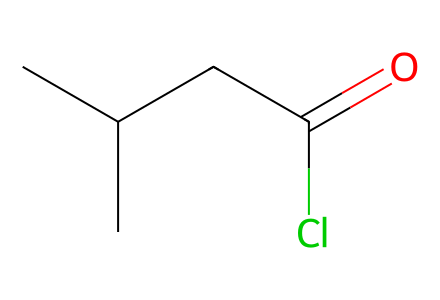
CC(C)CC(=O)Cl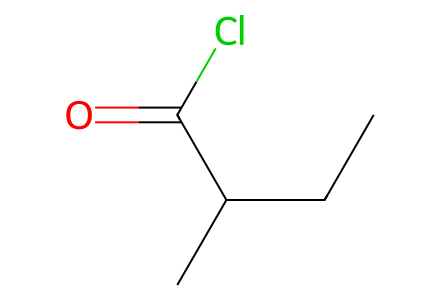
CCC(C)C(=O)Cl
CC(C)=CCBr
CC(C)=CCC/C(C)=C/CBr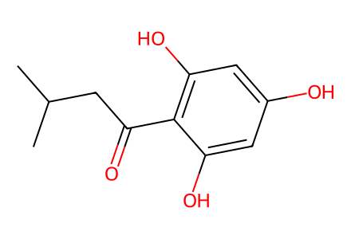
CC(C)CC(=O)c1c(O)cc(O)cc1O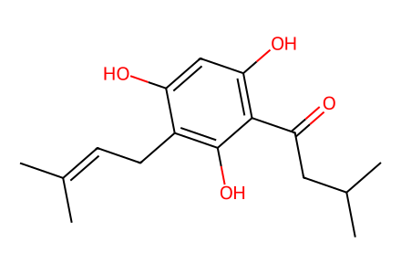
CC(C)=CCc1c(O)cc(O)c(C(=O)CC(C)C)c1O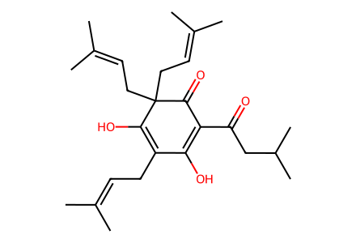
CC(C)=CCC1=C(O)C(CC=C(C)C)(CC=C(C)C)C(=O)C(C(=O)CC(C)C)=C1O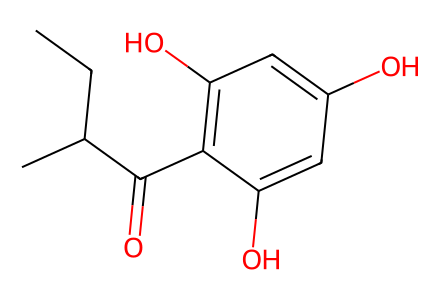
CCC(C)C(=O)c1c(O)cc(O)cc1O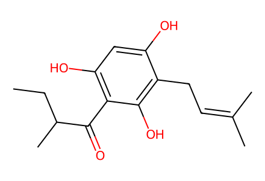
CCC(C)C(=O)c1c(O)cc(O)c(CC=C(C)C)c1O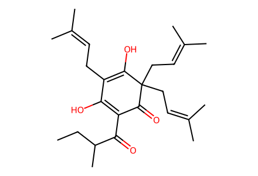
CCC(C)C(=O)C1=C(O)C(CC=C(C)C)=C(O)C(CC=C(C)C)(CC=C(C)C)C1=O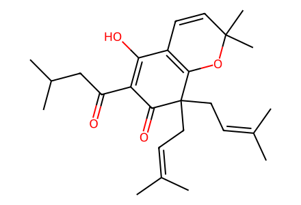
CC(C)=CCC1(CC=C(C)C)C(=O)C(C(=O)CC(C)C)=C(O)C2=C1OC(C)(C)C=C2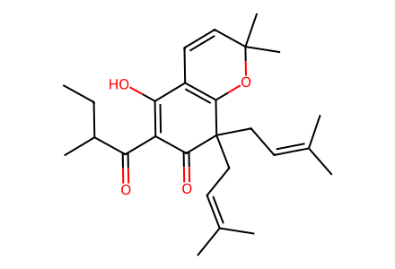
CCC(C)C(=O)C1=C(O)C2=C(OC(C)(C)C=C2)C(CC=C(C)C)(CC=C(C)C)C1=O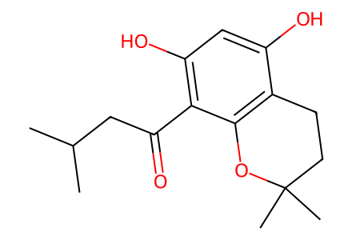
CC(C)CC(=O)c1c(O)cc(O)c2c1OC(C)(C)CC2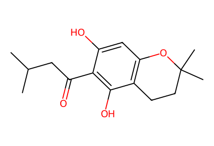
CC(C)CC(=O)c1c(O)cc2c(c1O)CCC(C)(C)O2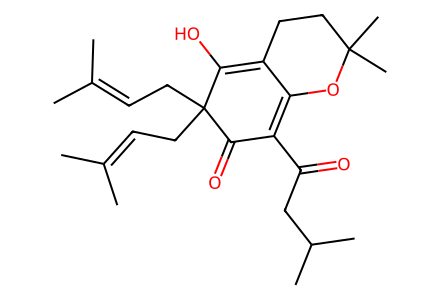
CC(C)=CCC1(CC=C(C)C)C(=O)C(C(=O)CC(C)C)=C2OC(C)(C)CCC2=C1O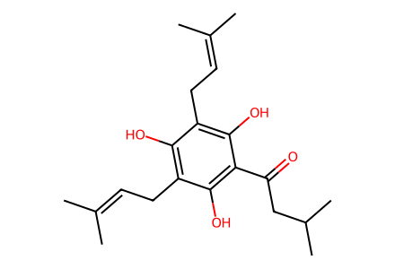
CC(C)=CCc1c(O)c(CC=C(C)C)c(O)c(C(=O)CC(C)C)c1O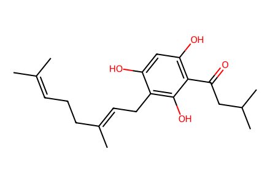
CC(C)=CCC/C(C)=C/Cc1c(O)cc(O)c(C(=O)CC(C)C)c1O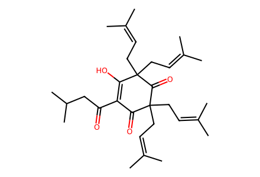
CC(C)=CCC1(CC=C(C)C)C(=O)C(C(=O)CC(C)C)=C(O)C(CC=C(C)C)(CC=C(C)C)C1=O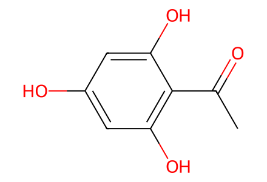
CC(=O)c1c(O)cc(O)cc1O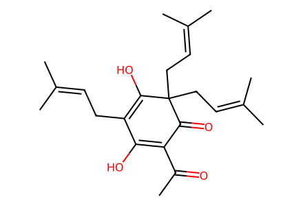
CC(=O)C1=C(O)C(CC=C(C)C)=C(O)C(CC=C(C)C)(CC=C(C)C)C1=O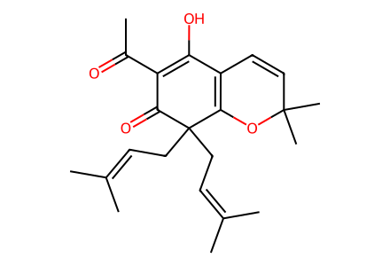
CC(=O)C1=C(O)C2=C(OC(C)(C)C=C2)C(CC=C(C)C)(CC=C(C)C)C1=O